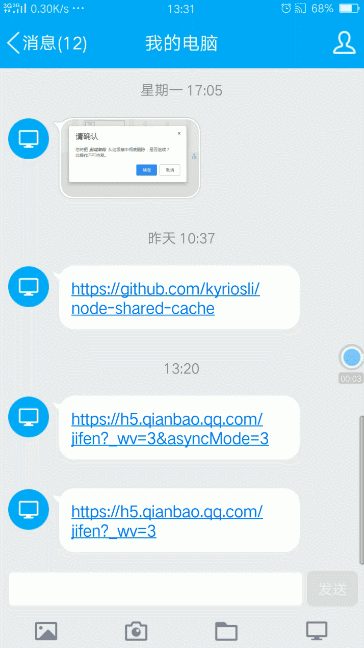
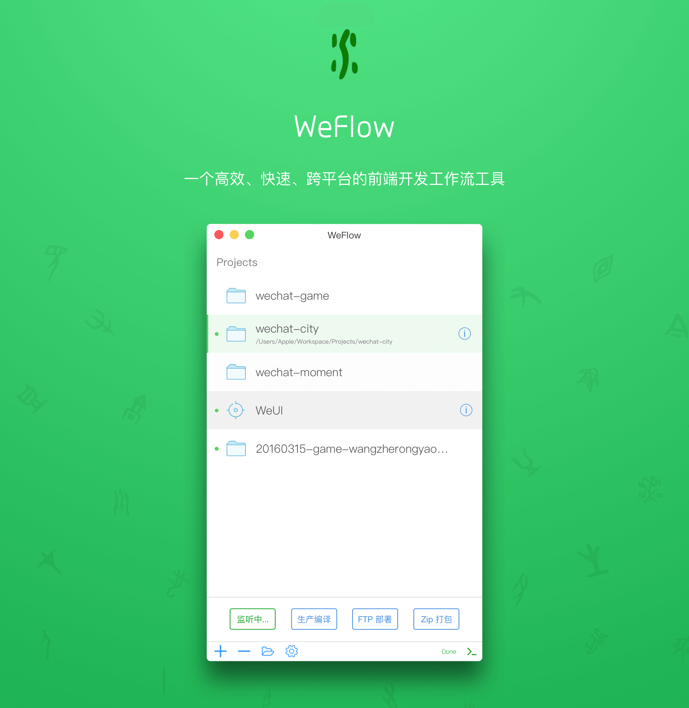
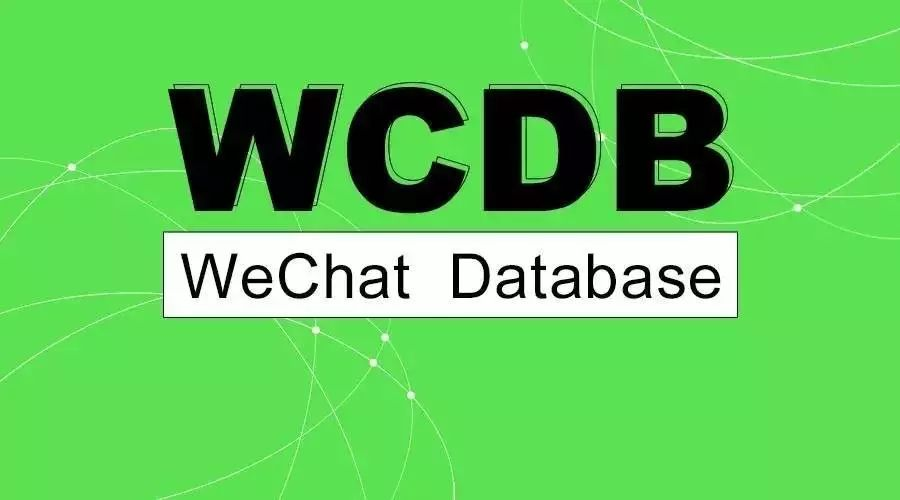
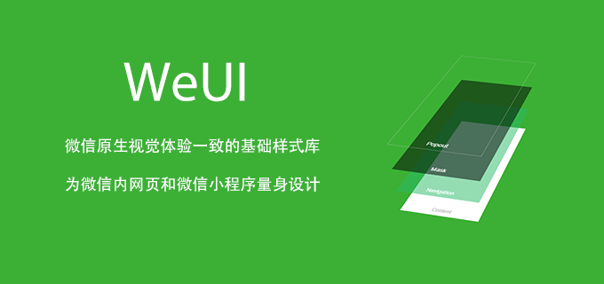
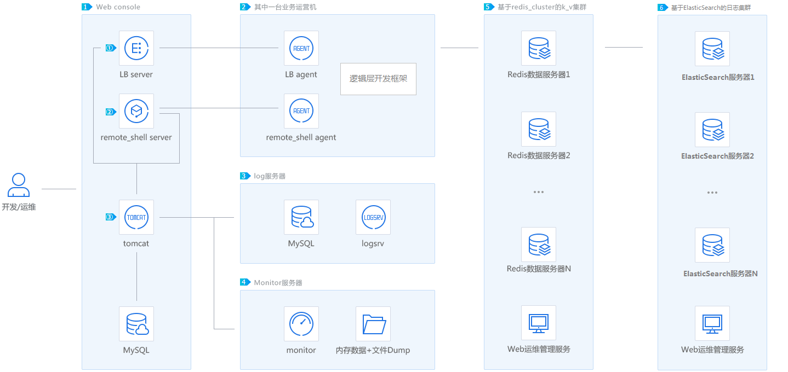

腾讯开源的项目比较多，在 Github(https://github.com/Tencent) 上开源的项目有 50 个。

1、Android 热修复框架 Tinker
Tinker 是微信官方的 Android 热补丁解决方案，它支持动态下发代码、So 库以及资源，让应用能够在不需要重新安装的情况下实现更新。当然，你也可以使用 Tinker 来更新你的插件。
它主要包括以下几个部分：
- gradle编译插件: tinker-patch-gradle-plugin
- 核心sdk库: tinker-android-lib
- 非gradle编译用户的命令行版本: tinker-patch-cli.jar
源码地址：https://github.com/Tencent/tinker
文档地址：https://github.com/Tencent/tinker/wiki

2、微信客户端跨平台组件 Mars
Mars 是微信官方的终端基础组件, 是一个业务性无关,平台性无关 使用C++ 编写的基础组件。目前已接入微信 Android、iOS、Mac、Windows、WP、UWP 等客户端。注意：目前仅支持Android、iOS、Mac、Windows 平台，其他平台会在后续的版本中很快支持
它主要包括以下几个部分：
- Comm：基础库，包括socket、线程、消息队列、协程等基础工具；
- Xlog：通用日志模块，充分考虑移动终端的特点，提供高性能、高可用、安全性、容错性的日志功能
- SDT：网络诊断模块；
- STN：信令传输网络模块，负责终端与服务器的小数据信令通道。包含了微信终端在移动网络上的大量优化经验与成果，经历了微信海量用户的考验。
源码地址：https://github.com/Tencent/mars
文档地址：https://github.com/Tencent/mars/wiki

3、小程序组件化开发框架 wepy
WePY 是一款让小程序支持组件化开发的框架，通过预编译的手段让开发者可以选择自己喜欢的开发风格去开发小程序。框架的细节优化，Promise，Async Functions的引入都是为了能让开发小程序项目变得更加简单，高效。
WePY 框架在开发过程中参考了 Vue 等现有框架的一些语法风格和功能特性，对原生小程序的开发模式进行了再次封装，更贴近于 MVVM 架构模式, 并支持ES6/7的一些新特性。
源码地址：https://github.com/Tencent/wepy
WePY 主页：https://tencent.github.io/wepy/
文档地址：https://tencent.github.io/wepy/document.html#/
WePY 资源汇总：https://github.com/aben1188/awesome-wepy

4、轻量级高性能的 Hybrid 框架 VasSonic
VasSonic取名于世嘉游戏形象音速小子，是腾讯VAS(SNG增值产品部QQ会员)团队研发的一个轻量级的高性能的Hybrid框架，专注于提升页面首屏加载速度，完美支持静态直出页面和动态直出页面，兼容离线包等方案。
目前QQ会员、QQ游戏中心、QQ个性化商城、QQ购物、QQ钱包、企鹅电竞等业务已经在使用，日均PV在1.2亿以上(仅统计手Q内数据)，页面首屏平均耗时在1s以下。
源码地址：https://github.com/Tencent/VasSonic
文档地址：https://github.com/Tencent/VasSonic/wiki
| 图1: 使用Sonic模式前 | 图2: 使用Sonic模式后 |
|---|---|
 |
 |
5、微信团队前端开发工具 WeFlow
WeFlow 一个高效、强大、跨平台的前端开发工作流工具。目前已支持了：微信游戏、微信·朋友圈广告、微信·城市服务等项目的第三方合作团队的前端构建工作，如果你更习惯命令行操作，可以直接使用 WeFlow 的核心：基于 Gulp 开发的 tmt-workflow :)。
源码地址：https://github.com/Tencent/WeFlow

6、移动数据库框架 WCDB
WCDB 是一个高效、完整、易用的移动数据库框架，基于 SQLCipher，支持 iOS, macOS 和 Android。基本特性：
- 易用，WCDB支持一句代码即可将数据取出并组合为object。
- 高效，WCDB通过框架层和sqlcipher源码优化，使其更高效的表现。
- 完整，WCDB覆盖了数据库相关各种场景的所需功能。
源码地址：https://github.com/Tencent/wcdb
文档地址：https://github.com/Tencent/wcdb/wiki

7、基于参数服务器理念的机器学习框架 Angel
Angel 是一个基于参数服务器(Parameter Server)理念开发的高性能分布式机器学习平台，它基于腾讯内部的海量数据进行了反复的调优，并具有广泛的适用性和稳定性，模型维度越高，优势越明显。 Angel 由腾讯和北京大学联合开发，兼顾了工业界的高可用性和学术界的创新性。
Angel的核心设计理念围绕模型。它将高维度的大模型合理切分到多个参数服务器节点，并通过高效的模型更新接口和运算函数，以及灵活的同步协议，轻松实现各种高效的机器学习算法。
Angel基于Java和Scala开发，能在社区的Yarn上直接调度运行，并基于PS Service，支持Spark on Angel，未来将会支持图计算和深度学习框架集成。
源码地址：https://github.com/Tencent/angel
文档地址：https://github.com/Tencent/angel
8、自动内存泄漏检测工具 MLeaksFinder
MLeaksFinder 是腾讯开源的 iOS 平台的自动内存泄漏检测工具，引进 MLeaksFinder 后，就可以在日常的开发，调试业务逻辑的过程中自动地发现并警告内存泄漏。
开发者无需打开 instrument 等额外的工具，也无需为了找内存泄漏而去跑额外的流程。并且 ，由于开发者在修改代码之后，一运行相关的业务逻辑就能发现内存泄漏，这使得开发者能很快地意识到是哪里的代码出了问题。这种及时的内存泄漏的发现在很大的程度上降低了修复内存泄漏的成本。
具有如下特性：
- 自动检测内存泄漏和释放不及时的场景
- 构建泄漏对象相对于 ViewContrller 的引用链以帮助开发者定位问题
- 不侵入业务逻辑，引入即生效，无需修改任何代码或引入头文件
源码地址：https://github.com/Tencent/MLeaksFinder
WeRead团队博客：http://wereadteam.github.io/

9、UI 库 WeUI
WeUI 是由微信官方设计团队专为微信移动 Web 应用设计的 UI 库。WeUI 是一套同微信原生视觉体验一致的基础样式库，为微信 Web 开发量身设计，可以令用户的使用感知更加统一。包含 button、cell、dialog、toast、article、icon 等各式元素。源码地址：https://github.com/Tencent/weui
文档地址：https://github.com/Tencent/weui/wiki
小程序版本源码：https://github.com/Tencent/weui-wxss/
在线实例：https://weui.io/

10、分布式后台服务引擎 MSEC
毫秒服务引擎(MSEC)由腾讯 QQ 团队开源。它是一个后端 DEV&OPS 引擎，包括RPC，名称查找，负载平衡，监控，发布和容量管理。毫秒服务引擎特性：
- 模块间访问采用RPC的方式，开发者不用关注网络与报文格式，像写单机程序一样开发分布式服务。
- 负载自动均衡与容错，对于单机故障、局部网络波动等状况自动应对，服务高可用性。
- 支持 C/C++/java/PHP 语言，如果选择 C/C++ 语言，支持协程，兼具开发和运行效率。
- Web 化的管理界面
- 简易部署，需要复杂部署的服务器都采用docker镜像的方式安装
- 相比使用其他开源组件拼凑起来的解决方案，毫秒服务引擎更加的体系化，对团队的规范更加到位
源码地址：https://github.com/Tencent/MSEC
官方地址：http://msec.qq.com/
